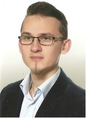

Witaj na mojej stronie internetowej,
nazywam się Wojciech Karaś i jestem studentem trzeciego roku Informatyki Stosowanej na wydziale Fizyki, Astronomii i Informatyki Stosowanej Uniwersytetu Jagiellońskiego. W celu uzyskania więcej informacji dotyczących uczelni, zapraszam na stronę strona wydziałowa informatyki. W roku 2018 zostałem absolwentem studiów magisterskich wydziału Geodezji Górniczej i Inżynierii Środowiska, specjalności Geodezja Inżytnieryjno-Przemysłowa. Zainteresowanych odsyłam na strona wydziałowa geodezji Nabytą wiedzę z zakresu geodezji łączę z poznawanymi technologiami informatycznymi tworząc własne skrypty do programów opracowujących dane przestrzenne
nazywam się Wojciech Karaś i jestem studentem trzeciego roku Informatyki Stosowanej na wydziale Fizyki, Astronomii i Informatyki Stosowanej Uniwersytetu Jagiellońskiego. W celu uzyskania więcej informacji dotyczących uczelni, zapraszam na stronę strona wydziałowa informatyki. W roku 2018 zostałem absolwentem studiów magisterskich wydziału Geodezji Górniczej i Inżynierii Środowiska, specjalności Geodezja Inżytnieryjno-Przemysłowa. Zainteresowanych odsyłam na strona wydziałowa geodezji Nabytą wiedzę z zakresu geodezji łączę z poznawanymi technologiami informatycznymi tworząc własne skrypty do programów opracowujących dane przestrzenne
Zainteresowania: filatelistyka, gry planszowe.
W razie pytan zapraszam do kontaktu mailowego: wojciechkaras1993@gmail.com